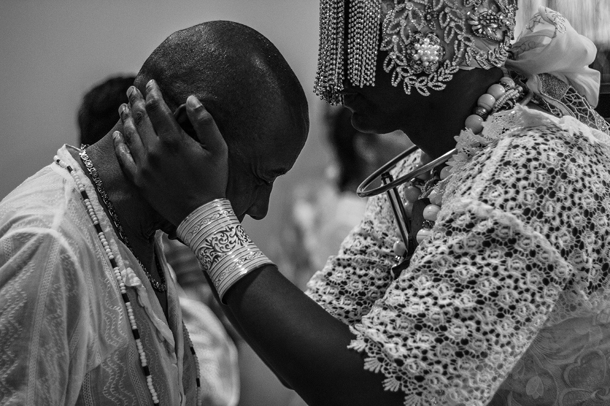
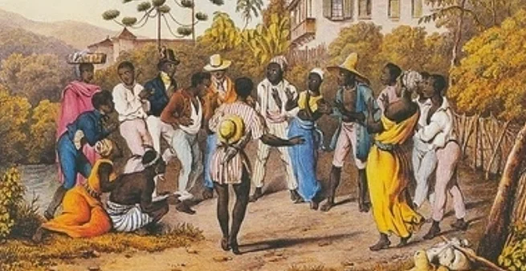
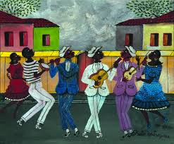
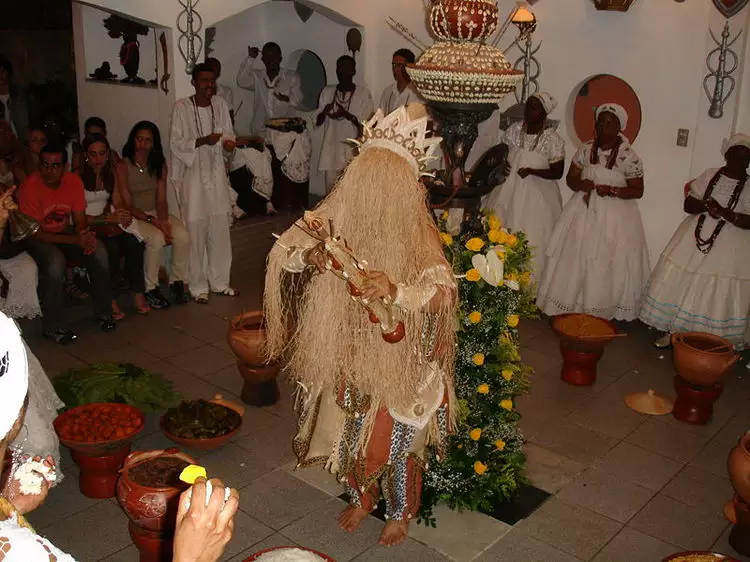
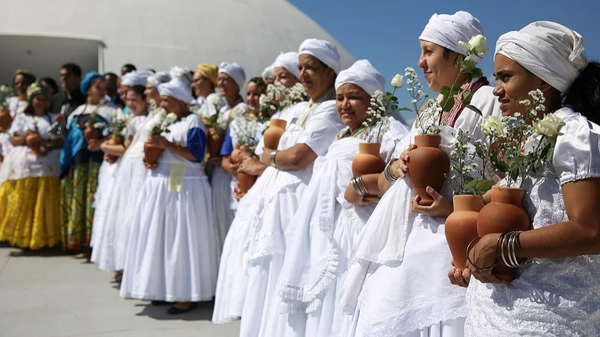
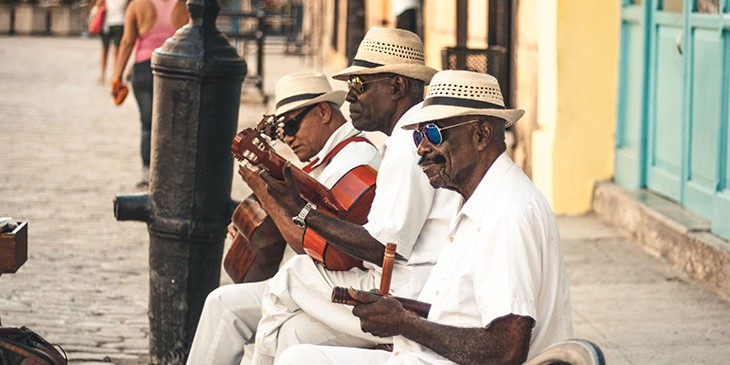
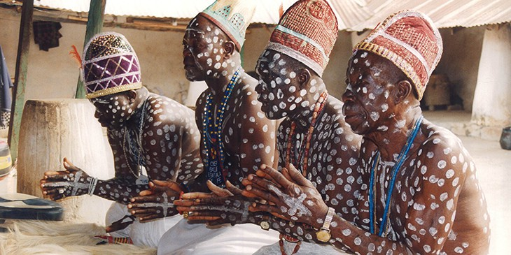

Religiosidade Durante a Diáspora Africana
A religiosidade na diáspora africana é marcada pela preservação das tradições culturais em meio à dispersão global da população africana. Nas Américas, surgiram religiões sincréticas, como Candomblé e Santería, que mesclam elementos das crenças africanas com práticas locais. Essas religiões celebram a espiritualidade, incorporando rituais, música e dança. A resistência e resiliência das comunidades afrodescendentes são evidenciadas na manutenção dessas práticas ao longo das gerações. A religiosidade na diáspora africana também desempenha um papel crucial na expressão cultural e na preservação da identidade afrodescendente.

Religiões Afro-Brasileiras
No contexto brasileiro, a época da escravidão proporcionou um encontro entre diversas tradições religiosas dos povos africanos, resultando na assimilação e na troca de elementos culturais semelhantes. Esse processo culminou na sobreposição e fusão de ritos com origens diversas, dando origem a uma mistura de elementos que deu origem às religiões afro-brasileiras. O Candomblé destaca-se como uma das práticas mais reconhecidas em todo o país, com seu panteão composto por orixás, inquices e voduns, que são divindades dos povos iorubá, banto e jeje, respectivamente.


Candomblé
O Candomblé é uma religião africana que venera os orixás. A palavra "candomblé" é uma combinação das palavras quimbundo "candombe" (dança com tambores) e iorubá "ilê" (casa), significando casa da dança com tambores. Originada do animismo africano, essa religião tem como fundamento a crença na alma da natureza. Segundo seus ensinamentos, animais e plantas têm espiritualidade.


Santería Cubana
A Santeria cubana é uma religião da nação Yorubá muito popular, não apenas em Cuba, mas também em muitos países da América Latina. Isso se deve à combinação entre a tradição folclórica trazida pelos escravos africanos e as práticas católicas impostas pelos colonizadores espanhóis. Embora alguns pesquisadores sugiram que o uso de santos católicos era uma forma de contornar o sistema escravista, a Santeria cubana carrega elementos do sincretismo religioso. Além disso, essa religião afro-cubana também reverencia um Deus superior e divindades sagradas que interagem com os seres humanos.

